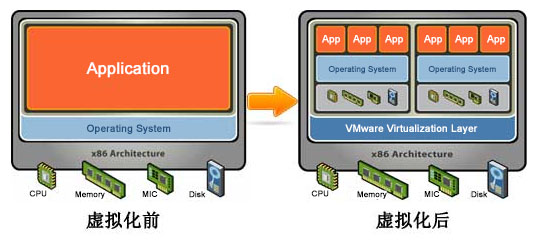
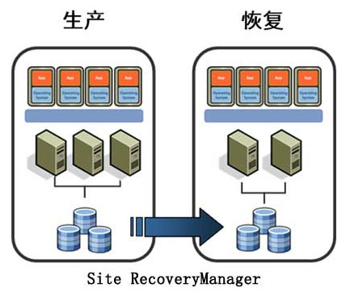
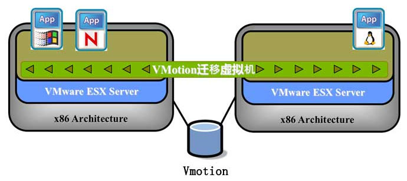

采用VMware构架解决方案构架对企业服务进行管理及维护，同时每台服务器上都安装配置VMware第五代虚拟架构套件VMware VSphere 企业版软件，用于在单个物理服务器实体上，生成多个虚拟服务器，而每一个虚拟服务器，从功能、性能和操作方式上，等同于传统的单台物理服务器，在每个虚拟服务器上，再安装配置Windows或Linux操作系统，进而再安装应用软件，这样以前的每个物理服务器就变身成为VMwareVSphere 5.1服务器上的虚拟机，从而大大提高资源利用率，降低成本，增强了系统和应用的可用性，提高系统的灵活性和快速响应，完美的实现了服务器虚拟架构的整合。

基于HA高可用性虚拟化构架
基于HA高可用性虚拟化构架HA高可用性解决方案可以保证每台虚拟机正常运行，如遇到物理级别灾难时虚拟机会在保证网络和系统状态时自动跳转到备用主机。
HA 的全称是 High Availability(高可用性)。VMwareHA群集一般具有一个包括两个或者两个以上ESX主机的逻辑队列。在一个HA群集中，每一台VMwareESX服务器配有一个HA代理，持续不断地检测群集中其他主机的心跳信号。ESX主机每隔五秒就会通过服务主机的网络连接发送心跳信号。假如某台ESX主机在连续三个时间间隔后都还没有发出心跳信号，那么该主机就被默认为发生了故障或者与网络的连接出现了问题。
在这种情况下，原本在该主机上运行的虚拟机就会自动被转移到群集中的其他主机上。反之，如果一台主机无法接收到来自群集的其他主机的心跳信号，那么该主机便会启动一个内部进程来检测自己跟群集中其他主机的连接是否出现了问题。如果真的出现了问题，那么就会中断在这台主机上所有正在运行的虚拟机，并启动预先设定好的备用主机。
基于 DRS 实现资源高可用性
VMware的分布式资源调度（Distributed Resource Scheduler，DRS）可以持续不断地监控VMware主机集群中资源池的利用率，并能够根据商业需要在虚拟机中智能地分配其所需的资源。通过动态分配和平衡计算资源，VMwareDRS能够整合服务器，降低IT成本，增强灵活性；减少停机时间，保持业务的持续性和稳定性；减少需要运行服务器的数量以及动态地切断当前未需使用的服务器的电源，提高了能源的利用率。
一旦客户将服务器整合到资源较少的物理主机上，虚拟机的资源需求往往会成为意想不到的瓶颈，全部资源需求很有可能超过主机的可用资源。VMware DRS 则提供了一个自动化机制，通过持续地平衡容量将虚拟机迁移到有更多可用资源的主机上，确保每个虚拟机在任何节点都能及时地调用相应的资源。即便大量运 行 SQL Server 的虚拟机，只要采用了 DRS，就不必再对 CPU 和内存的瓶颈进行一一监测。全自动化的资源分配和负载平衡功能，也可以显著地降低数据中心 的成本与运营费用。
基于 VMware SRM 虚拟构架
在具体实现中，为了实现数据的集中存储、数据高可用、高安全性以及充分利用VMware虚拟架构高可用性特点。本方案采用 VMware vCenter Site Recovery Manager 提供用于灾难恢复管理、无中断测试和自动化故障切换的高级功能。VMware vCenter Site RecoveryManager 可以管理从生产数据中心到灾难恢复站点的故障切换，以及两个具有活动工作负载的站点之间的故障切换，甚至可以将多个站点恢复为一个共享的恢复站点。SiteRecoveryManager 还可帮 助进行数据中心的计划内故障切换，例如数据中心迁移。

SRM 解决方案在硬件设备上需要配置一套光纤存储阵列产品，同时配置冗余的光纤交换机，为了确保数据完整性两台SAN存储相互之间进行数据镜像。通过共享的SAN存储架构，可以最大化的发挥虚拟架构的优势，进行在线地迁移正在运行的虚拟机（VMware VMotion），进行动态的资源管理（VMwareDRS）和集中的基于虚拟机快照技术的LanFree的整合备份（VMwareVCB）等，而且为以后的容灾提供扩展性和打下基础。

VMware 集中管理特性
为了集中管理和监控虚拟机、实现自动化以及简化资源调配，建议单独配置一套服务器安装Windows系统，用于安装VSphere套件中的VirtualCenter 软件，对几台物理服务器及其上的虚拟服务器进行统一的管理。
通过标准 PC 自动化部署解决方案的实施，用户将深刻的体会到如下好处。
提高现有资源的利用率：通过 整合服务器将共用的基础架构资源聚合到池中，打破原有的“一台服务器一个应用程序”模式。
通过缩减物理基础架构和提高服务器/管理员比率，降低数据中心成本：由于服务器及相关IT硬件更少，因此减少了占地空间，也减少了电力和散热需求。管理工具更加出色，可帮助提高服务器/管理员比率，因此所需人员数量也将随之减少。
提高硬件和 应用程序的可用性，进而提高业务连续性：可安全地备份和迁移整个虚拟环境而不会出现服务中断。消除计划内停机，并可从计划外故障中立即恢复。
实现运营灵活性：由于采用动态资源管理、加快了服务器调配并改进了桌面和应用程序部署，因此可及时响应市场的变化。